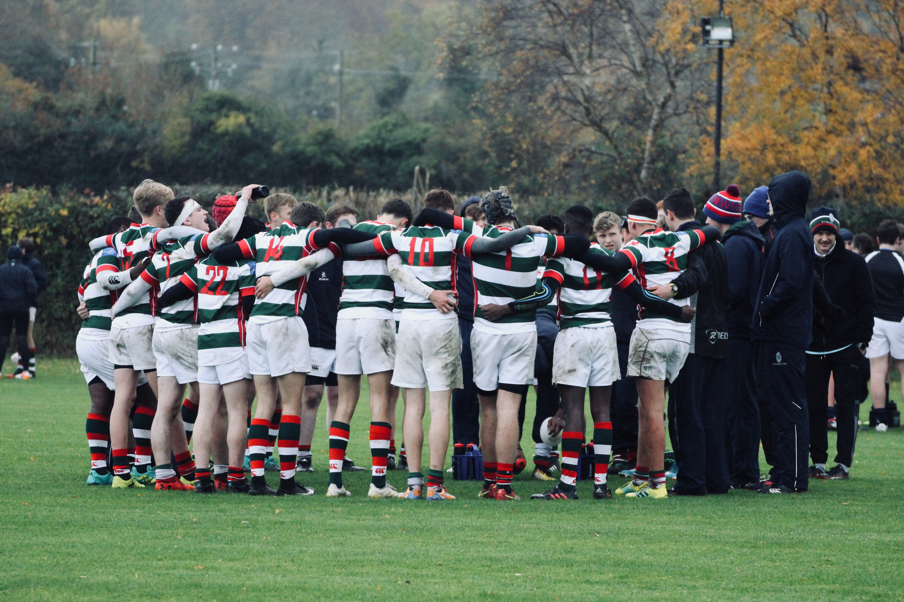

Les choses que j'aime...

Dynamique, sérieuse et motivée, je suis prête à tout pour obtenir le stage de mes rêves !
Voici une vidéo sur le rugby qui me tient à coeur, c'est une de mes passions
La commununication a très vite été le domaine qui m'attirait le plus.
Après avoir effectué deux stages, un en communication globale à l'office de Tourisme de Messanges dans les Landes et un autre, en relations Presse en agence de communication spécialisée dans le luxe à Paris. J'avais le poste d'assistante relations presse au pôle tourisme.
J'ai donc pu observer qu'il n'y avait pas seulement le secteur rugbystique dans lequel je pourrais m'épanouir. D'autant plus que je n'ai pas encore eu l'opportunité de réaliser un stage autour de ce sport. J'aimerais énormément mais au vu de la la crise sanitaire actuelle, cela me semble compromis étant donné l'arrêt des activités sportives.
Le cinéma est également un secteur que je trouve très intéressant.